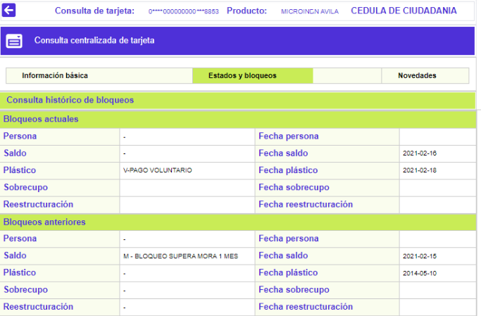
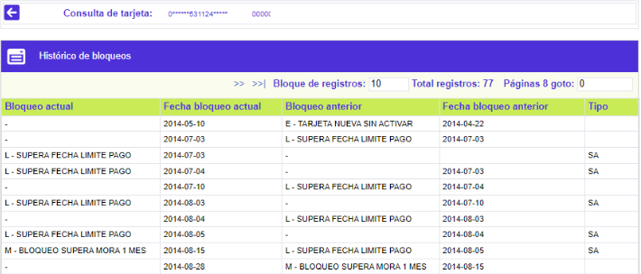

Estados y bloqueos
En este formulario que se invoca desde la Consulta centralizada de la tarjeta, la entidad puede visualizar, en dos bloques, la información acerca de los bloqueos actuales y los que ha tenido la tarjeta y, la fecha en la cual estos fueron aplicados o levantados. El formulario contiene adicionalmente el enlace Consulta histórico de bloqueos que le permite al usuario, conocer la información detallada de los diferentes bloqueos que haya tenido la tarjeta.
Los campos descritos a continuación aplican igual para los bloques de datos Actuales y Anteriores con la respectiva interpretación.

Descripción de campos
|
Persona |
Campo que muestra el mas reciente bloqueo aplicado al cliente titular de la tarjeta. |
|
Fecha persona |
Este campo despliega la fecha en la cual se le aplicó al cliente el bloqueo. Cuando solo existe dato de fecha y el bloqueo se encuentra en blanco, se debe interpretar como la fecha en la que se levantó este tipo de bloqueo. |
Saldo |
Campo que muestra el mas reciente bloqueo aplicado sobre el saldo de la tarjeta cuando por ejemplo ha estado en mora. |
Fecha saldo |
Este campo despliega la fecha en la cual fue aplicado el bloqueo sobre el saldo de la tarjeta. Cuando solo existe dato de fecha y el bloqueo se encuentra en blanco, se debe interpretar como la fecha en la que se levantó este tipo de bloqueo. |
Plástico |
Campo que muestra el mas reciente bloqueo aplicado sobre el plástico propiamente dicho por ejemplo cuando se ha reportado la pérdida o robo de la misma, la cancelación voluntaria o no, bloqueos preventivos entre otros. |
Fecha plástico |
Este campo despliega la fecha en la cual se aplicó el bloqueo a la tarjeta o plástico. Cuando solo existe dato de fecha y el bloqueo se encuentra en blanco, se debe interpretar como la fecha en la que se levantó este tipo de bloqueo. |
Sobrecupo |
Campo que muestra el mas reciente bloqueo aplicado que ha tenido la tarjeta por haber incurrido en sobrecupo. |
Fecha sobrecupo |
Este campo despliega la fecha en la cual se aplicó el bloqueo por sobrecupo a la tarjeta. Cuando solo existe dato de fecha y el bloqueo se encuentra en blanco, se debe interpretar como la fecha en la que se levantó este tipo de bloqueo. |
Reestructuración |
Si la tarjeta se encuentra reestrucuturada o refinanciada, en este campo se muestra el bloqueo correspondiente. |
Fecha reestructuración |
Este campo despliega la fecha en la cual se aplicó el bloqueo por reestructuración a la tarjeta. Cuando solo existe dato de fecha y el bloqueo se encuentra en blanco, se debe interpretar como la fecha en la que se levantó este tipo de bloqueo. |
Consulta histórico de bloqueos: si el actor invoca el Al activar este enlace, se despliega un nuevo formulario en el cual se muestra al usuario la información detallada de los diferentes estados que ha tenido la tarjeta y que han sido aplicados incluso con anterioridad a los que se muestran en el formulario inicial.
El único campo adicional que contiene este formulario es 'Tipo', que indica si la información que muestra el registro corresponde a un bloqueo de persona, saldo, plástico, sobrecupo o reestructuración.
